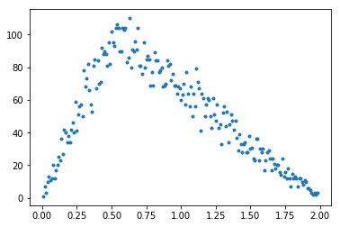
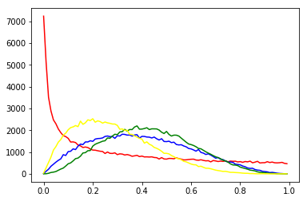
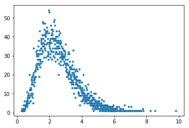
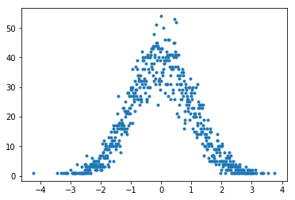
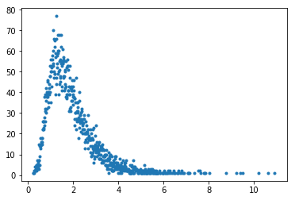
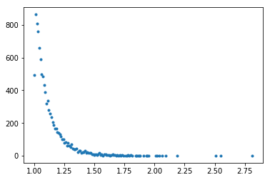
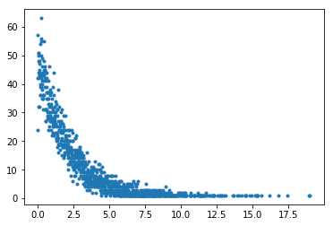

1. 使用标准库处理基本数学问题
python内置了多数情况下足够用的数学工具用于做一些简单计算,主要包括几个部分:
专用的数据类型
包括有标准库中的理数,高精度数类型以及默认支持的复数类型
常用计算算法
包括针对自然数和复数的log,三角函数等计算
统计学工具
包括常用的统计计算算法和随机数模块
1.1. 默认数的形式
python中的数分为
- 整数
0
- 浮点数
1.1
- 复数,而且大数计算是内置的被优化的相当好.
1+2j
1.1.1. 数的进制
默认的数是10进制的,但python中也支持其他几种进制
- 16进制
0x10
16
- 8进制
0O10
8
- 2进制
0b10
2
而十进制转换成别的进制就会麻烦一些,需要使用bin(dec),oct(dec),hex(dec)这样的内置函数
bin(2)
'0b10'
oct(8)
'0o10'
hex(16)
'0x10'
可以看到转换后得到的其实是字符串,这个需要注意.
1.1.2. 大数的表示[3.6]
从python3.6起,大数可以使用每三位加一格下划线的表述方式输入了
12_234
12234
1.2. 内置的计算操作
python内置的合法计算符号包括:
| 符号 | 操作名 |
|---|---|
+ |
加 |
- |
减 |
* |
乘 |
/ |
除 |
// |
整除 |
** |
求幂 |
abs |
取绝对值 |
另外还有一个符号@表示矩阵乘法,这个官方的数据结构没有实现但numpy和pandas倒是实现了
1.3. 高精度数(decimal)
高精度数模块(decimal)提供了一种可用于代替float的数据类型,这种数据类型并不适合常用计算,因为高精度意味着更耗时;但在需要高精度浮点运算时比较好用,适合用在财务上.
这种数据类型可以由整数,浮点数,数字字符串转化得来
1.3.1. 获得当前精度环境
from decimal import getcontext
getcontext()
Context(prec=28, rounding=ROUND_HALF_EVEN, Emin=-999999, Emax=999999, capitals=1, clamp=0, flags=[], traps=[InvalidOperation, DivisionByZero, Overflow])
1.3.2. 设定精度
getcontext().prec = 10
1.3.3. 转化为decimal数据类型
from decimal import Decimal
Decimal(1) / Decimal(7)
Decimal('0.1428571429')
1.4. 有理数(fractions)
有理数(fractions)模块提供了一种用来表示有理数的数据类型,它可以用整数,浮点数,高精度数或者数字和除号字符串创建
from fractions import Fraction
Fraction(16, -10)
Fraction(-8, 5)
Fraction(123)
Fraction(123, 1)
Fraction()
Fraction(0, 1)
Fraction('3/7')
Fraction(3, 7)
Fraction('1.414213 \t\n')
Fraction(1414213, 1000000)
Fraction('-.125')
Fraction(-1, 8)
Fraction('7e-6')
Fraction(7, 1000000)
Fraction(2.25)
Fraction(9, 4)
Fraction(1.1)
Fraction(2476979795053773, 2251799813685248)
from decimal import Decimal
Fraction(Decimal('1.1'))
Fraction(11, 10)
1.5. 数学运算模块math
python自带的math模块提供了一些常用的数学运算和常数
1.5.1. 常数
| 常数 | 说明 |
|---|---|
| math.e | 自然常数e |
| math.pi | 圆周率pi |
1.5.2. 数值计算
| 函数 | 说明 | 例子 |
|---|---|---|
| math.ceil(x) | 返回大于x的整数上限的浮点数,x为整数则返回自己的浮点形式 | math.ceil(1)->1.0,</br>math.ceil(1.1)->2.0,</br>math.ceil(-1.5)->-1.0 |
| math.copysign(x, y) | 返回绝对值为x,符号为y的符号的数 | math.copysign(1.0, -0.0)->-1.0 |
| math.fabs(x) | 相当于abs(x),返回绝对值 | math.fabs(-3.4)->3.4 |
| math.factorial(x) | 数学上的x!,阶乘 | math.factorial(3)->6 |
| math.floor(x) | 与ceil相反,得到上限 | math.floor(-0.5)->-1.0 |
| math.fmod(x, y) | 求模运算,适合用在浮点数,注意和%的不同 |
math.fmod(3.5, -2)->1.5</br>3.5%-2->-0.5 |
| math.frexp(x) | 将x拆成分(m,e),x== m 2*e | math.frexp(2.43)->(0.6075, 2) |
| math.fsum(iterable) | 求序列中所有数的和的精确值 | fsum([.1, .1, .1, .1, .1, .1, .1, .1, .1, .1])->1.0 |
| math.isinf(x) | 判断x是不是float("inf") |
--- |
| math.isnan(x) | 判断x是不是float("NaN") |
--- |
| math.ldexp(m,e) | 求m 2*e | math.ldexp(3, 1)->6.0 |
| math.modf(x) | 拆分整数小数部分 | math.modf(-3.5)->(-0.5, -3.0) |
| math.trunc(x) | 返回整数部分 | math.trunc(3.5)->3 |
1.5.3. 平方和对数
| 函数 | 说明 | 例子 |
|---|---|---|
| math.exp(x) | 自然数的幂 e**x | math.exp(2)->7.38905609893065 |
| math.expm1(x) | 返回e的x次方减1 | math.expm1(2)->6.38905609893065 |
| math.log(x[, base]) | 返回x的以base为底的对数，base默认为e | math.log(math.e)->1.0</br>math.log(10,2)->3.3219280948873626 |
| math.log10(x) | 返回x的以10为底的对数 | math.log10(2)->0.30102999566398114 |
| math.log1p(x) | 返回1+x的自然对数（以e为底) | math.log1p(math.e-1)->1.0 |
| math.pow(x, y) | 返回x的y次方 | math.pow(5,3)->125.0 |
| math.sqrt(x) | 返回x的平方根 | math.sqrt(3)->1.7320508075688772 |
1.5.4. 三角函数
- 弧度
| 函数 | 说明 |
|---|---|
| math.acos(x) | acos(x) |
| math.asin(x) | asin(x) |
| math.atan(x) | atan(x) |
| math.atan2(y, x) | atan(y / x) |
| math.cos(x) | cos(x) |
| math.hypot(x, y) | sqrt(xx + yy) |
| math.sin(x) | sin(x) |
| math.tan(x) | tan(x) |
- 角度,弧度转换
| 函数 | 说明 |
|---|---|
| math.degrees(x) | 弧度转度 |
| math.radians(x) | 度转弧度 |
1.5.5. 双曲函数
| 函数 | 说明 |
|---|---|
math.sinh(x) |
双曲正弦 |
math.cosh(x) |
双曲余弦 |
math.tanh(x) |
双曲正切 |
math.acosh(x) |
反双曲余弦 |
math.asinh(x) |
反双曲正弦 |
math.atanh(x) |
反双曲正切 |
1.5.6. 特殊函数:
| 函数 | 说明 |
|---|---|
| math.erf(x) | 误差函数: |
| math.erfc(x) | 互补误差函数: |
| math.gamma(x) | 伽玛函数 |
| math.lgamma(x) | 伽马函数绝对值的自然对数 |
1.6. 复数运算(cmath)
这个模块和math很像,只是面向的操作对象是复数.它独有的接口有
from cmath import phase,polar,rect
1.6.1. 极坐标转换
phase()求相(相当于求atan2(x.imag, x.real))
phase(-1.0+0.0j)
3.141592653589793
phase(complex(-1.0,-0.0))
-3.141592653589793
polar(x)转换为极坐标
polar(x) 相当于 (abs(x), phase(x)).
polar(complex(-1.0,-0.0))
(1.0, -3.141592653589793)
rect(r,phi)已知半径和度数求以两边长为值的复数
from math import pi
rect(1,pi/4)
(0.7071067811865476+0.7071067811865475j)
1.7. 统计模块(statistics)
该模块是3.4后新增的模块,这个模块提供一些统计学方法
1.7.1. 均值中心性
| 函数 | 说明 |
|---|---|
| mean() | 均值 |
| median() | 中位数 |
| median_low() | Low median of data. |
| median_high() | High median of data. |
| median_grouped() | Median, or 50th percentile, of grouped data. |
| mode() | 众数 Mode (most common value) of discrete data. |
L = range(10000)
from statistics import mean,median,median_low,median_high,median_grouped,mode
mean(L)
4999.5
median(L)
4999.5
median_low(L)
4999
median_low(L)
4999
median_high(L)
5000
median_high(L)
5000
median_grouped(L)
4999.5
median_grouped(L, interval=2)
4999.0
from random import randint
XL = [randint(1,10) for i in range(10000)]
mode(XL)
3
1.7.2. 分布统计
| 函数 | 说明 |
|---|---|
| pstdev() | 总体标准差 |
| pvariance() | 总体方差 |
| stdev() | 样本标准差 |
| variance() | 样本方差 |
from statistics import pstdev,pvariance,stdev,variance
pstdev(L)
2886.751331514372
pvariance(L)
8333333.25
stdev(L)
2886.8956799071675
variance(L)
8334166.666666667
1.8. 随机模块random
1.8.1. 常规用法
无论在做测试中还是在做模拟中,随机都是必须的模块,具体这样用:
import random
random.random() # [0,1)内随机浮点数
0.25415523691401276
random.uniform(1, 10) # [1,10)内随机浮点数
5.470078932858412
random.randint(1, 10) # [1,10]范围内的随机整数
4
random.randrange(0, 101, 2) # 从等差数列中随机挑一个数
54
random.choice('abcdefghij') # 随机选一个
'e'
items = [1, 2, 3, 4, 5, 6, 7]
random.shuffle(items)#随机排序
random.sample([1, 2, 3, 4, 5], 3) # 随机选3个元素
[5, 2, 1]
1.8.2. 随机种子
学过C的都知道伪随机,python也是伪随机,所以可以通过设定seed值来改变随机状态
from matplotlib import pyplot as plt
%matplotlib inline
1.8.3. 数学上的一些特殊随机
- 三角分布
三角分布式是连续概率分布,可以看做是在一个范围中有一个数(众数)它附近有最高的概率密度即最有可能出现在该众数上
random.triangular(low, high, mode)#三角形分布,默认众数(mode)是中值
hight,low,mode = 0,2,0.5
random.triangular(hight,low,mode)
1.1251317155398355
from collections import Counter
c = Counter()
for nbr in [round(random.triangular(0,2,0.5),2) for i in range(10000)]:
c[nbr] = c[nbr] + 1
plt.plot([float(i) for i in c.keys()],[float(i) for i in c.values()],".")
plt.show()

- β分布
β分布是在0到1上的特殊分布,
做硬币试验的假定分布，即做伯努利试验的假定分布在确定伯努利试验的分布之前，我们利用试验的少量数据来估计试验的概率（作为先验概率）beta分布涉及两个参数：1、试验成功的次数2、试验失败的次数.
概率密度函数为:
累积分布函数:
其中是不完全Β函数, 是正则不完全贝塔函数
是不完全Β函数， 是正则不完全贝塔函数
random.betavariate(alpha, beta)#beta分布
l0=[random.betavariate(0.5,1) for i in range(100000)]
l1=[random.betavariate(2,3) for i in range(100000)]
l2=[random.betavariate(3,4) for i in range(100000)]
l3=[random.betavariate(2,5) for i in range(100000)]
r0=[len([1 for j in l0 if i+0.005>j>i-0.005])
for i in map(lambda x:round(x*0.01,3),range(0,100,1))]
r1=[len([1 for j in l1 if i+0.005>j>i-0.005])
for i in map(lambda x:round(x*0.01,3),range(0,100,1))]
r2=[len([1 for j in l2 if i+0.005>j>i-0.005])
for i in map(lambda x:round(x*0.01,3),range(0,100,1))]
r3=[len([1 for j in l3 if i+0.005>j>i-0.005])
for i in map(lambda x:round(x*0.01,3),range(0,100,1))]
plt.plot(list(map(lambda x:round(x*0.01,3),
range(0,100,1))),r0,color="red")
plt.plot(list(map(lambda x:round(x*0.01,3),
range(0,100,1))),r1,color="blue")
plt.plot(list(map(lambda x:round(x*0.01,3),
range(0,100,1))),r2,color="green")
plt.plot(list(map(lambda x:round(x*0.01,3),
range(0,100,1))),r3,color="yellow")
plt.show()

- 指数分布
概率密度函数:
指数分布可以用来表示独立随机事件发生的时间间隔，比如旅客进机场的时间间隔、中文维基百科新条目出现的时间间隔等等。 许多电子产品的寿命分布一般服从指数分布。有的系统的寿命分布也可用指数分布来近似。它在可靠性研究中是最常用的一种分布形式。指数分布是伽玛分布和威布尔分布的特殊情况，产品的失效是偶然失效时，其寿命服从指数分布。 指数分布可以看作当威布尔分布中的形状系数等于1的特殊分布，指数分布的失效率是与时间t无关的常数，所以分布函数简单。
概率密度函数:
累积分布函数:
期望值:
方差:
random.expovariate(lambd)
random.expovariate(3)
0.00044025063564512545
c_e3 = Counter()
for nbr in [round(random.expovariate(3),2 )
for i in range(10000)]:
c_e3[nbr] = c_e3[nbr] + 1
plt.plot([float(i) for i in c_e3.keys()],
[float(i) for i in c_e3.values()],".")
plt.show()

- 伽玛分布
概率密度函数:
令 ; 则有:
random.gammavariate(alpha, beta)
c_gamma = Counter()
for nbr in [round(random.gammavariate(5,0.5),2 )
for i in range(10000)]:
c_gamma [nbr] = c_gamma [nbr] + 1
plt.plot([float(i) for i in c_gamma.keys()],
[float(i) for i in c_gamma.values()],".")
plt.show()

- 高斯分布(正态分布)
概率密度函数:
其中 与 分别是变量对数的平均值与标准差
random.gauss(mu, sigma)#略快于下面的方法
random.normalvariate(mu, sigma)
c_gauss = Counter()
for nbr in [round(random.gauss(0,1),2 )
for i in range(10000)]:
c_gauss[nbr] = c_gauss[nbr] + 1
plt.plot([float(i) for i in c_gauss.keys()],
[float(i) for i in c_gauss.values()],".")
plt.show()

- 对数正态分布
如果 X 是正态分布的随机变量，则 exp(X) 为对数正态分布；同样，如果 Y 是对数正态分布，则 ln(Y) 为正态分布。 如果一个变量可以看作是许多很小独立因子的乘积，则这个变量可以看作是对数正态分布。
概率密度函数:
其中 与 分别是变量对数的平均值与标准差
random.lognormvariate(mu, sigma)
c_log = Counter()
for nbr in [round(random.lognormvariate(0.5,0.5),2 )
for i in range(10000)]:
c_log[nbr] = c_log[nbr] + 1
plt.plot([float(i) for i in c_log.keys()],[float(i)
for i in c_log.values()],".")
plt.show()

- 冯·米塞斯分布
冯·米塞斯分布（von Mises distribution）指一种圆上连续概率分布模型，它也被称作循环正态分布
概率密度函数:
参数μ和1/κ是μ和σ^2（对应正态分布中的均值和方差）的模拟量
- μ是位置的度量（分布将围绕μ成簇）
- κ是集中度的度量（分散度的倒数，所以1/κ是σ^2的模拟量）
- 如果κ为0，分布是均匀分布，对于κ很小的情形，分布近似均匀分布
- 如果κ很大，分布紧紧围绕μ集中分布。实际上，随着κ增加，分布将趋于x以μ为均值1/κ为方差的正态分布
random.vonmisesvariate(mu, kappa)
c_von = Counter()
for nbr in [round(random.vonmisesvariate(10,1),2 )
for i in range(10000)]:
c_von[nbr] = c_von[nbr] + 1
plt.plot([float(i) for i in c_von.keys()],
[float(i) for i in c_von.values()],".")
plt.show()

- 帕累托分布
帕累托法则(2,8定律) 帕累托分布是以意大利经济学家维弗雷多·帕雷托命名的。 是从大量真实世界的现象中发现的幂定律分布。这个分布在经济学以外，也被称为布拉德福分布。
概率密度函数:
k是形状参数(shape parameter)
random.paretovariate(k)
c_par = Counter()
for nbr in [round(random.paretovariate(10),2 )
for i in range(10000)]:
c_par[nbr] = c_par[nbr] + 1
plt.plot([float(i) for i in c_par.keys()],
[float(i) for i in c_par.values()],".")
plt.show()

- 韦伯分布
韦伯分布（Weibull distribution），又称韦氏分布或威布尔分布，是可靠性分析和寿命检验的理论基础。
概率密度函数:
λ＞0是比例参数（scale parameter），k＞0是形状参数（shape parameter）
random.weibullvariate(lambda, k)
c_wei = Counter()
for nbr in [round(random.weibullvariate(2,1),2 )
for i in range(10000)]:
c_wei[nbr] = c_wei[nbr] + 1
plt.plot([float(i) for i in c_wei.keys()],
[float(i) for i in c_wei.values()],".")
plt.show()
